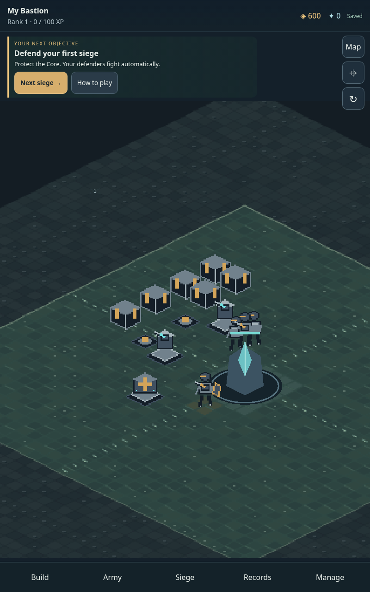

Project Rando · 0.4.0 · 21 October 2026
A clearer way to command your Bastion.
The battlefield leads. Menus open when you need them. Your next siege, its threats and your preparation choices are easier to find.
Use your usual Chrome profile to retain this site's saves. No PC, account or installation is required.
What changed
- A visible next objective, short siege brief and prominent Start action.
- Closable menus, illustrated build cards, Army filters and optional detailed controls.
- Touch pan and pinch, reviewed rally points, precise alternatives and safer placement.
- Corrected movement, camera-relative facings, formations, trap behavior and recovery costs.
- A more defined courtyard and faster collision calculations with matching combat results.

Actual browser capture of the revised starting field. Artwork remains native pixel art.
Controls and getting started
Create a Bastion, choose Next siege, read the short briefing, then choose Start siege. Defenders fight automatically.
Drag empty ground to pan. Pinch to zoom. Tap a defender to inspect it. Map and precise placement controls offer alternatives. A build preview spends nothing until Place succeeds.
During combat you can pause, inspect the map, change speed or open Siege tools. A long browser interruption pauses the fight until you resume.
Export progress through Manage → Data / backups → Export backup.
Tests, balance and remaining limits
189 unit/integration checks and 90 browser cases pass. The final current-game browser run passed all 20 cases without retries or skips. The downloadable review and test evidence describe the complete runs, corrections and limits.
The combat sweep includes 63 cases across the campaign and additional modes. Its seeded force recorded 12 victories and 51 defeats. These are regression outcomes, not proof of 40 natural campaign clears.
Legal early-game comparisons found viable first-boss strategies for all three doctrines. A generic purchase plan did not work equally well for every doctrine. Long-term balance remains unproven.
Two extreme rendered stress runs exceeded ten minutes without page errors, but their frame times were poor under heavy throttling and shared-machine load. They do not certify Lenovo performance. Physical touch comfort, sound, pacing and frame rate still need your tablet.
The design review places the revised core journey around 8/10. Visual asset refinement is 7/10; whole-campaign balance and physical-device acceptance are not established. These are provisional judgments, not a claim that every aspect is finished.
Design reasoning and research
The interface follows progressive disclosure, clear current objectives, large touch targets and alternatives to gestures. Threat readability and deliberate preparation were compared with Subset Games' design postmortem; the game's continuous 360-degree movement is preserved.
Read the blueprint addendum and primary references.
The original save database and schema are retained. Current corrected mechanics apply when restarting a captured battle. This release does not promise an old runtime's exact event sequence.